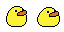

Duckoman Rebirth
Browser-native rebuild in progress
The original Unity build has been retired. Duckoman is being rebuilt as a responsive modern browser platformer.
Original game by Jonathan Fox / FishWash. Attribution and license

Duckoman Rebirth
The original Unity build has been retired. Duckoman is being rebuilt as a responsive modern browser platformer.
Original game by Jonathan Fox / FishWash. Attribution and license